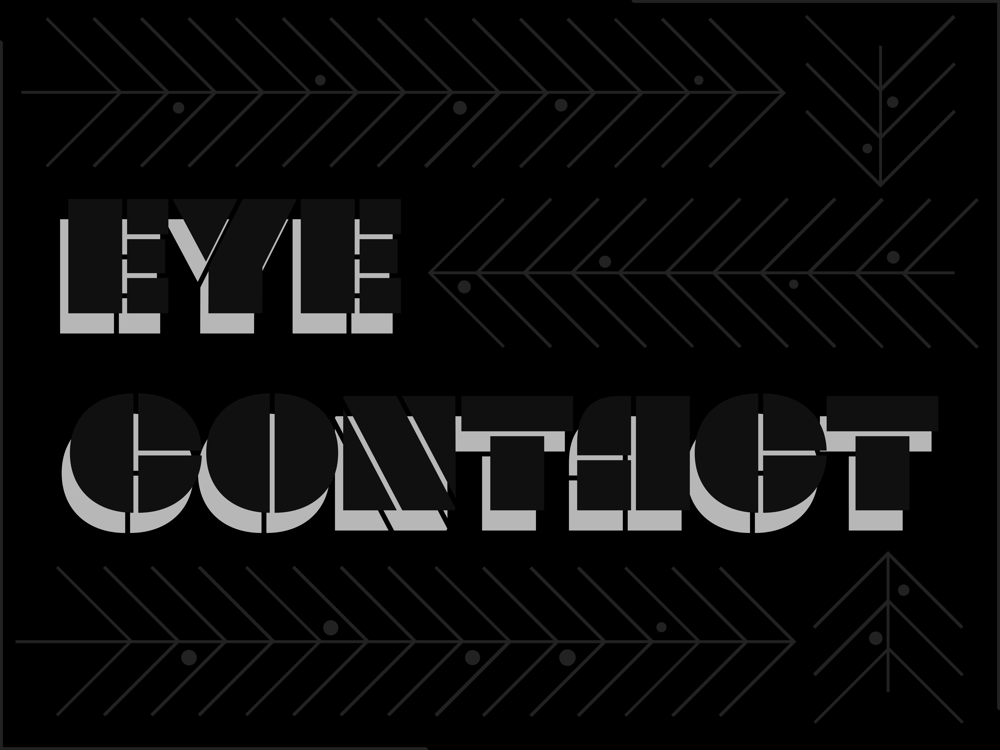
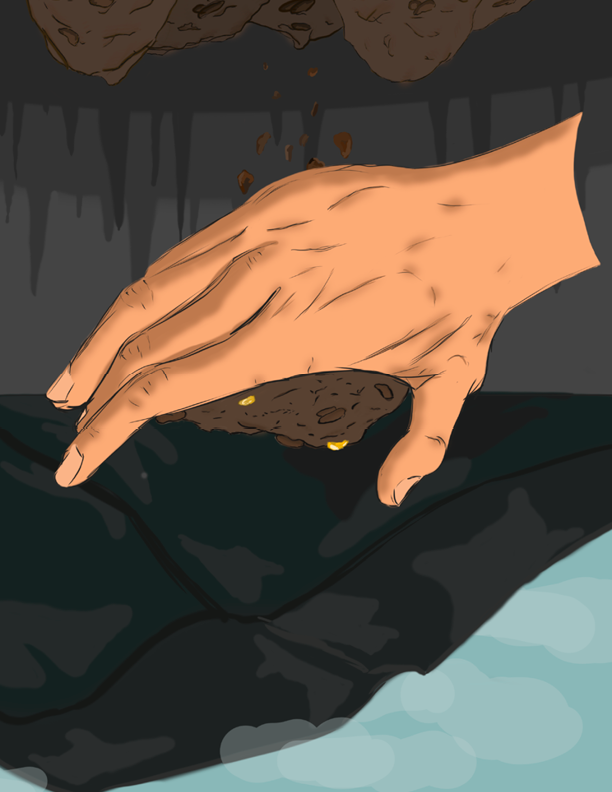
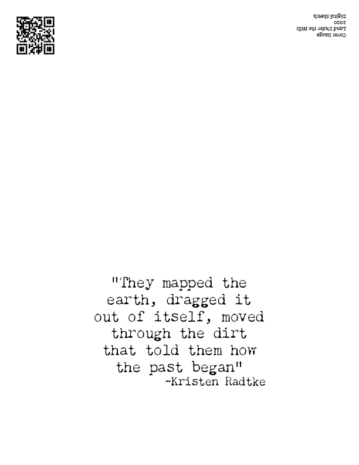
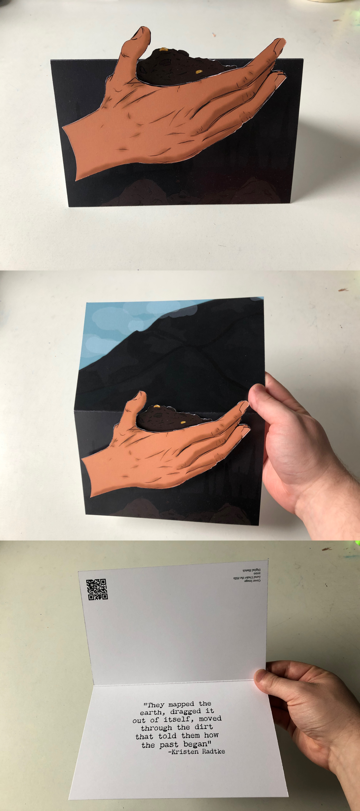
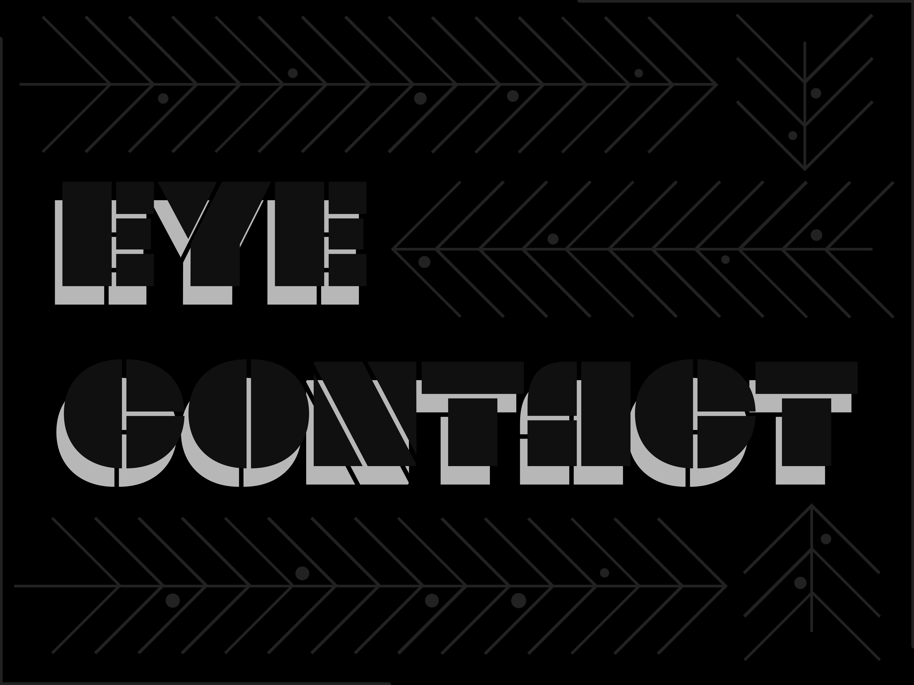
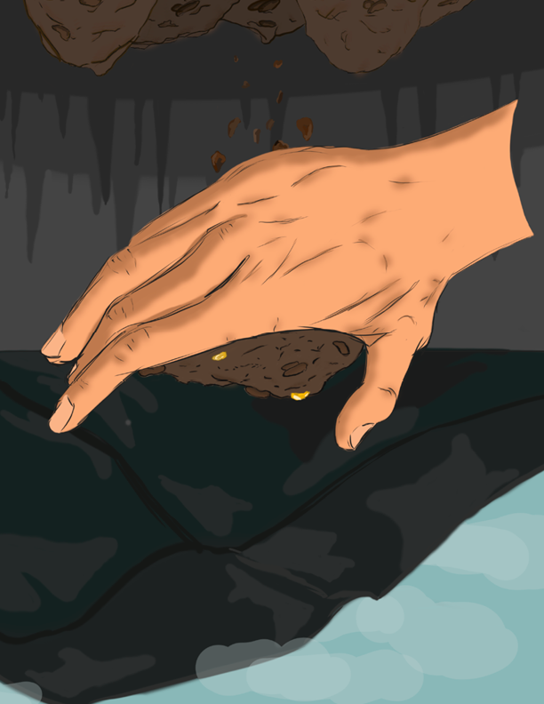
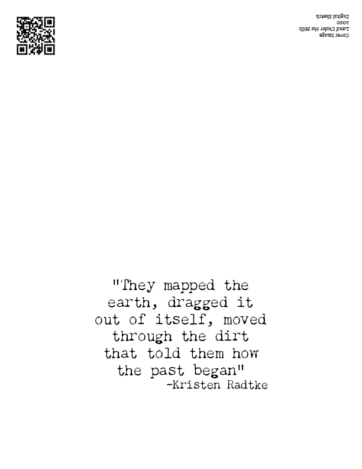
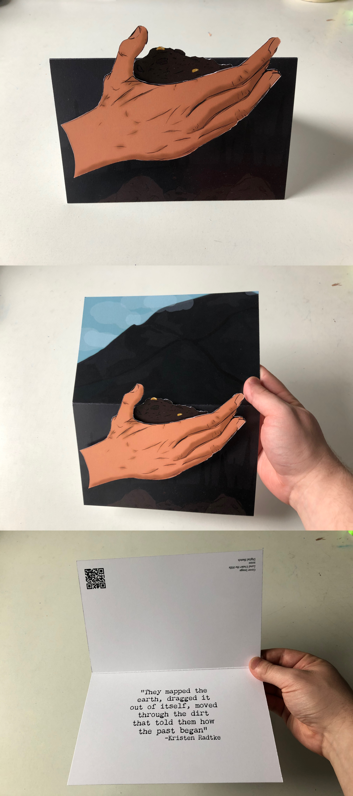
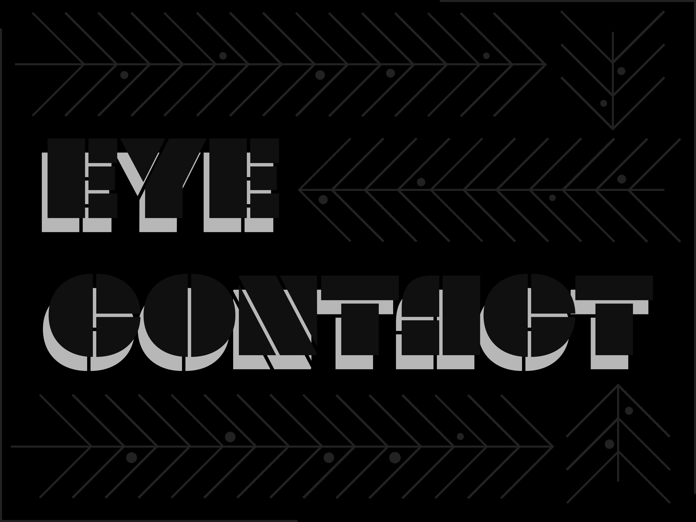
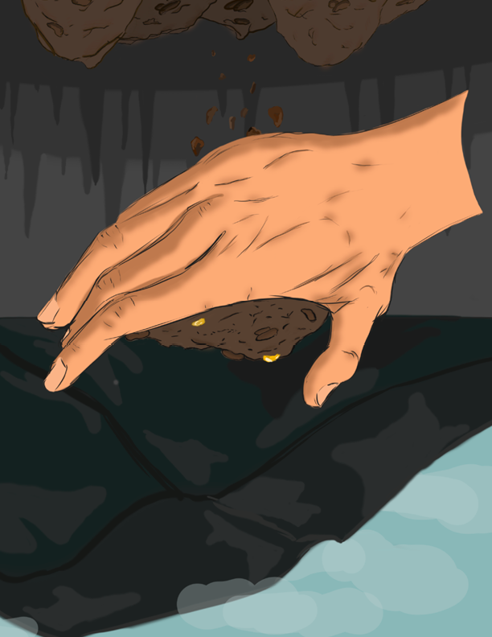
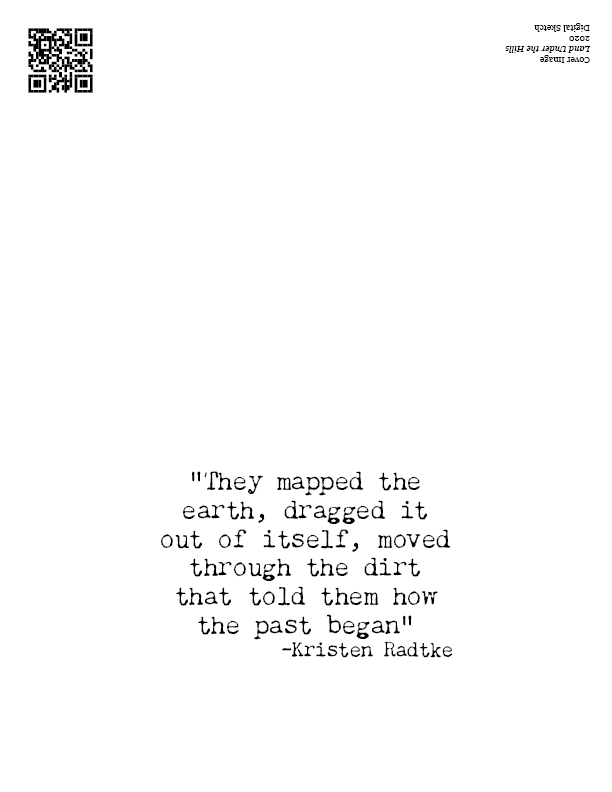
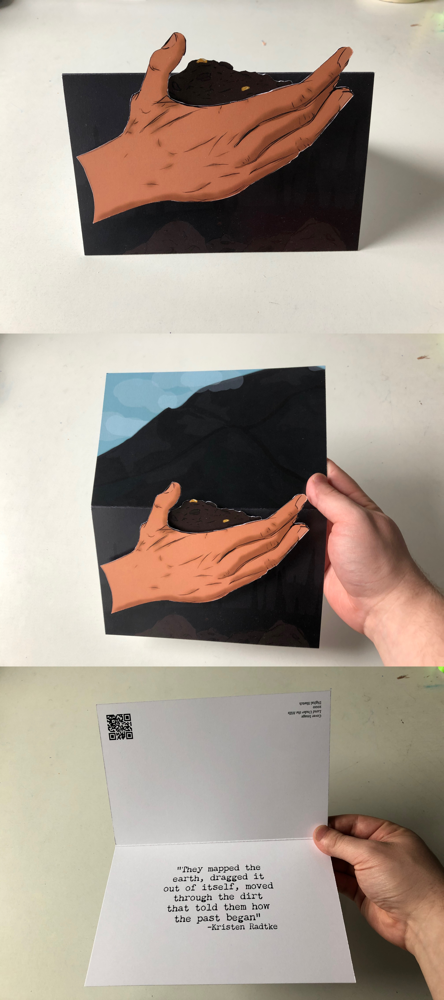
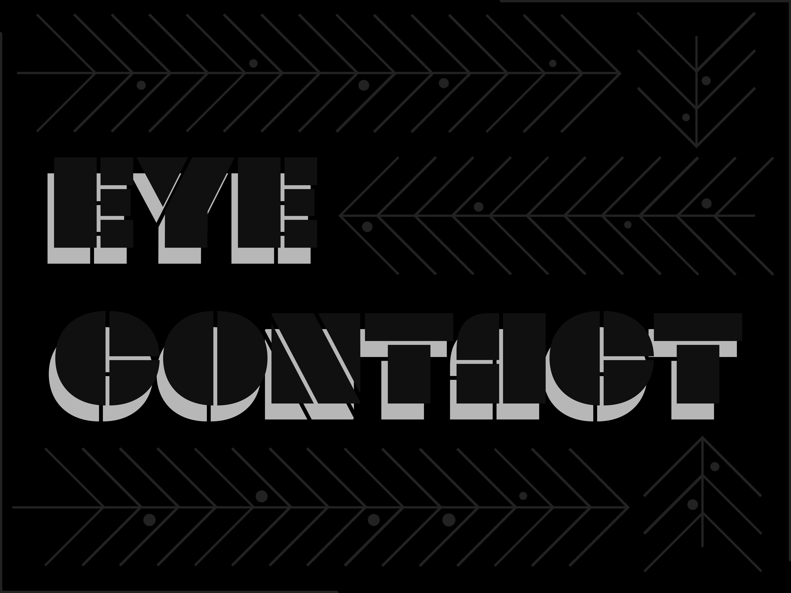
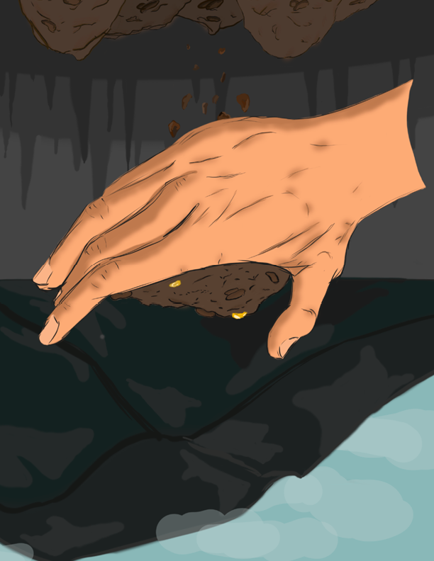
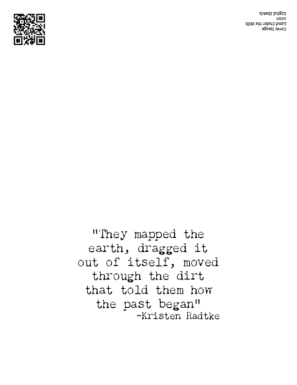
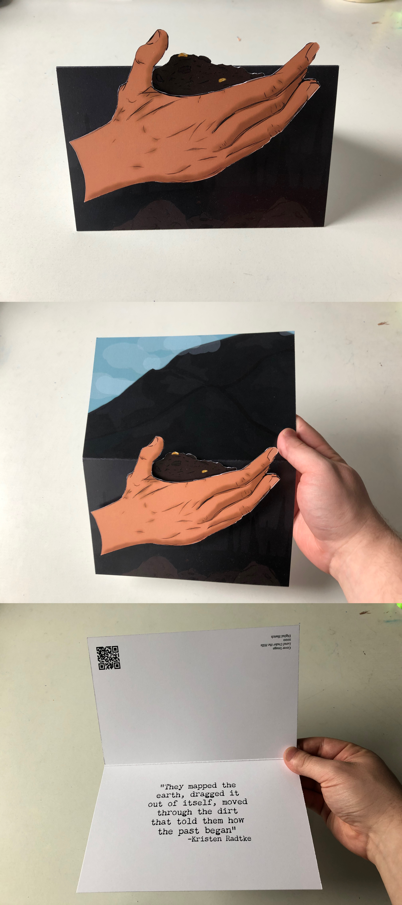
In this I focused on color harmony and used a semi restricted color pallet to explore and create an overall piece.

Here I practiced and better formalized myself with the tools and options in photoshop. For this project I had to make a photo mash up using atmospheric perspective to create depth throughout the image.

For this I created a photo mashup in photoshop with drawn elements that represented my personality and interests.


Here I had to design two logos in illustrator, one that represents me and one that was a redesign of my school’s -CIA- logo.

Poster designed in illustrator and printed.


Greeting card based on the book “Imagine Wanting only This” by Kristen Radtke. Designed in photoshop and formatted in InDesign.